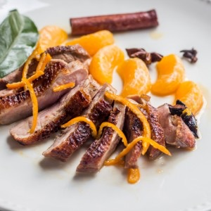
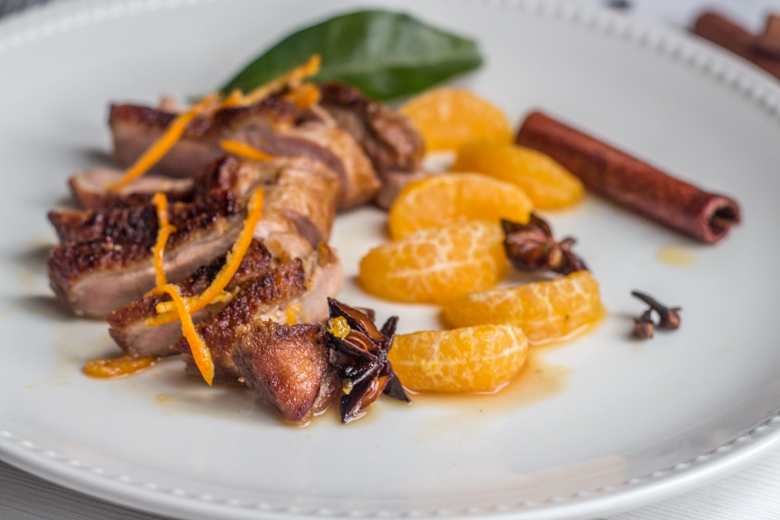
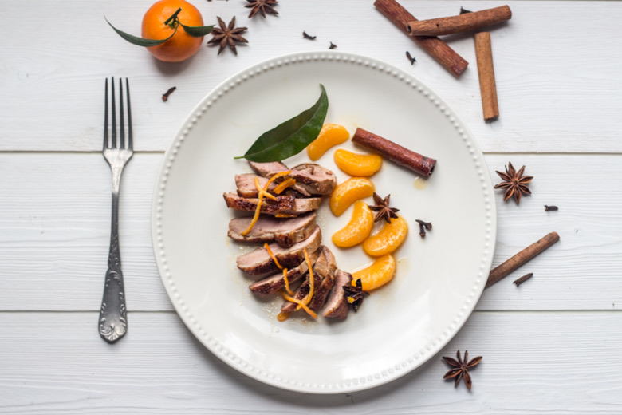

Magret de canard aux clémentines corses

On continue notre menu de fêtes avec comme plat principal un magret de canard aux clémentines corses! Un régal!
Après l’entrée que je vous ai proposé hier on continue aujourd’hui le repas de notre menu pour le réveillon du nouvel an avec comme plat principal un magret de canard aux clémentines corses et aux épices. Comme je l’ai expliqué hier dans l’article du cheesecake au saumon (recette ici) je me suis lancée le défi de réaliser un menu pour le réveillon du nouvel an et Leclerc m’a lancé ce même défi alors j’ai réalisé mes recette avec des produits « marque repère » et « nos régions ont du talents » (sauf pour les clémentines^^).
Pour l’idée du plat ce fut un travail d’équipe! Je voulais du magret et mon chéri des clémentines et de la badiane! C’est donc tout naturellement que l’idée d’un bon magret de canard aux clémentines corses (car pour moi elles sont sans conteste les meilleures) nous est venue!!
Je pense que je vais profiter du fait que l’on peut encore trouver des clémentines corses pour refaire et refaire cette recette car c’était un délice!! Les clous de girofle, la badiane et la cannelle apportent une note épicée qui se marie parfaitement avec la douceur du miel et l’acidité des clémentines.
Sur la photo j’ai versé peu de jus dans l’assiette (pour des raisons esthétique) et j’ai préféré le verser au moment de la dégustation afin que chacun puisse en mettre comme il le souhaite.
Je vous laisse découvrir la recette et j’espère qu’elle vous inspirera!
Ingrédients
- Magret de canard - 2
- Clémentines corses - 12
- Vinaigre balsamique blanc - 2 càs
- Miel - 6 càs
- Cannelle - 2 bâtons
- Clous de girofle - 5
- Badiane (anis étoilé) - 5
Instructions
- Préparer les ingrédients pour la sauce : Pressez 8 clémentines pour en obtenir le jus, réserver Pour les 4 clémentines restantes : récupérer les zestes et garder les quartiers de côté
- Enlever l’excédent de gras du magret
- Quadriller la peau du magret côté gras sans appuyer pour ne pas toucher la chair
- Dans une poêle chaude, saisir les magrets côté peau pendant 4 min afin que le gras fonde
- Retourner les magrets et cuire pendant 3 minutes
- Retourner à nouveau les magrets côté peau et cuire pendant 2 min
- Enlever le surplus de graisse de la poêle
- Retirer les magrets de canard du feu et maintenez-les au chaud
- Déglacer avec le vinaigre balsamique BLANC
- Verser le jus des clémentines
- Ajouter les épices, le miel et les zestes
- Laisser légèrement réduire
- Ajouter les quartiers de clémentines et les faire revenir dans la sauce


Les tips de la communauté
Recette excellente avec un fort attrait pour le sucré-salé. Les commentaires louent l'originalité de la sauce aux clémentines et valorisent l'utilisation de clémentines corses pour leur qualité supérieure.
Astuces
- Utiliser des clémentines corses qui ont plus de goût que les clémentines d'Espagne
- Les clémentines corses avec leurs feuilles vertes sont un bon choix
- Le sucré-salé fonctionne très bien avec le magret de canard
- Accompagner avec du riz pour un accord parfait
Variantes suggérées
- Adapter la sauce avec d'autres fruits acides selon la saison
- Créer une variante avec des pommes pour une version sucré-salé alternative